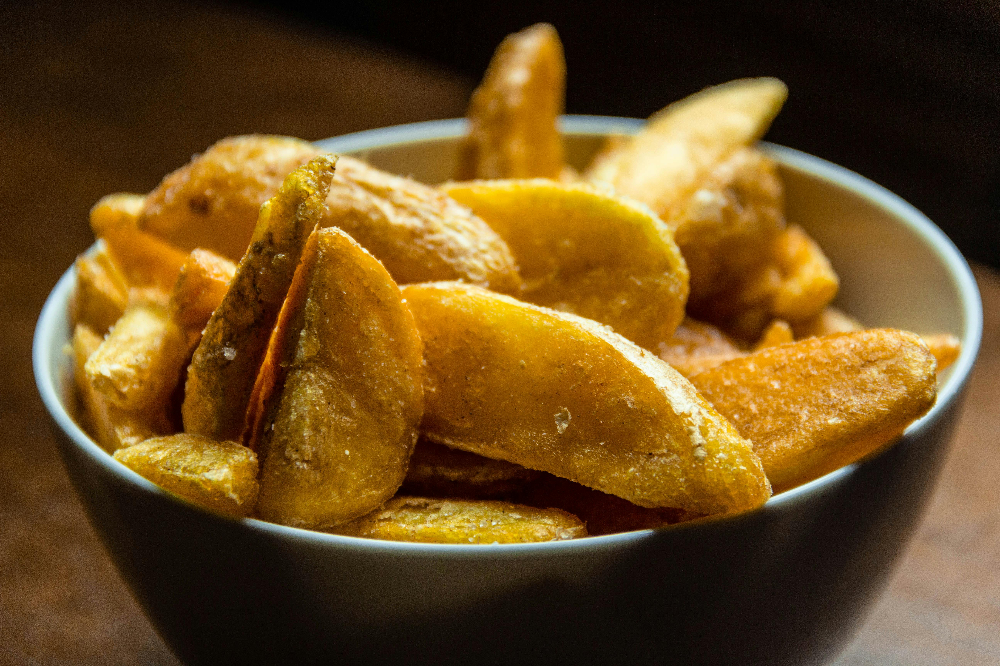

Home
Home Fries Recipe

Description
Learn how to make home fries crispy like the ones at your local diner!
Ingredients
- 3 large russet potatoes, peeled and quartered
- 2 tablespoons olive oil
- 1 tablespoon butter
- ¼ teaspoon paprika
- 1 pinch cayenne pepper, or to taste
- 1 pinch garlic powder
- 1 pinch onion powder
- salt and ground black pepper to taste
- 1 tablespoon chopped fresh chives
Steps
- Arrange potatoes evenly on a microwave-safe plate. Microwave on high until just tender,
about 4 minutes. Let cool to room temperature. Cut potatoes into bite-sized chunks.
- Heat butter and olive oil in a nonstick skillet over medium-high heat until butter
melts and starts to turn brown. Swirl the pan and add potatoes; shake the pan
to arrange in an even layer. Season with paprika, cayenne, garlic powder,
onion powder, salt, and pepper.
- Continue to toss potatoes and cook until reddish-brown, crusty, and crispy on
the edges, 10 to 12 minutes. If potatoes are cooking too quickly, reduce the
heat to medium. Garnish with chives.